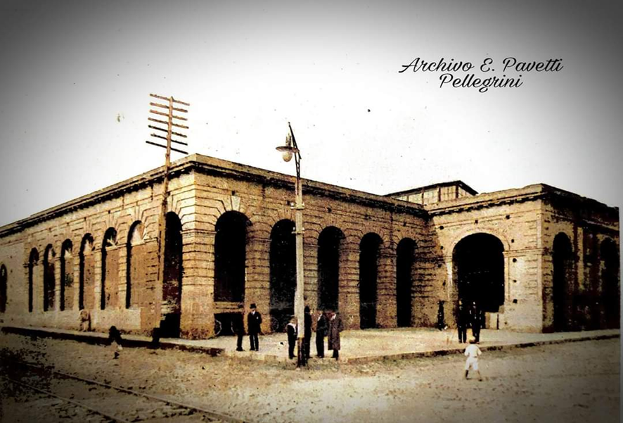

Current name Sub Secretary of State for Tribulation
Other denominations: Paraguayan State-Ministry of Finance
Historical Aspects The Cathedral neighborhood is one of the oldest and main neighborhoods of the city of Asunción, located within the Historic Center of this city. During the Government of President Don Carlos Antonio López, in the year 1849, under his order, a Register of Urban Properties and Building Cadastre was carried out, and concluded with the opening and arrangements of streets fixing a nomenclature to each one and for this same time, seven large walls of lime and stone were completed in the Port. Continuing his work, he leveled streets, forming stone ramps, building firm and passable roads, "giving the streets a more regular direction and figure." At the end of 1850 and the beginning of the 20th century, always during his government, the most flourishing period in terms of constructions arose, with the coming of European immigrants, all professionals in different areas, who contributed their knowledge in the construction of houses, buildings, whether in the capital Asunción as well as in important cities in the interior of the country.
Even today in the Historic Center of Asunción, emblematic buildings such as: Palacio de López, Palacio Benigno López, Oratorio de la Virgen Nuestra Lady of the Assumption and National Pantheon of Heroes, among others. Also some buildings that were left unfinished, as is the case of the "Teatro de López" Building.
President Don Carlos Antonio López wanted it to be an Opera House. The ground floor was designed as a stall, which is why it was requested to the architect Alessandro Ravizza (Italian) for its design and construction, inspired by Alla Scala in Milan. This work meant, without a doubt, one of the the maximum efforts of the Government, which would correspond in this case to his son, Marshal Francisco Solano López.
Several documentary testimonies show that Alessandro Ravizza dedicated his best efforts to this building and to the Assumption Oratory.
The Historian Estrada did not hesitate to affirm that: "the plan reveals that the Architect who directed it was an artist" (Estrada Santiago de, La Asunción of Paraguay, Argentine Magazine. Volume 5, Buenos Aires, year 1869). Another Historian with the surname Carrasco; echoes the news, that the plane was inspired by the Scala in Milan and believes that, once completed, it would have been "the most beautiful and spacious not only in the Río de la Plata, but in America all" (Carrasco Gabriel, Letters of travel through Paraguay. Ed. J. Peuser. Buenos Aires, year 1889).
Apparently, in 1936 the Engineer Paprosky verified the coincidence with the layout of the Scala in Milan and offered to conclude it, but the large investment that this would mean discouraged the company. The cyclopean character of the building and the enormous brick walls, led to the decision to build a new theater in which "despite being of remarkable proportions, it is more cheaper than the termination of the previous one".
It is thus, that, in the post war, in the year 1886 the construction of the Municipal Theater begins. The building designed for Opera House, was converted into public offices.
In the 1970s, the expansion of the second floor (top floor) was carried out respecting the architecture of the building, but for other purposes: state uses, to this day.
Formal Aspects: Neoclassical Style.
Formal Description: From the point of view of applied technology: A building pattern is observed that is characterized by the transition towards Neoclassicism and Eclectic and colonial construction technology is left aside. New national (iron profiles) and imported (marble, etc.) materials are introduced. the concept of Facade Architecture and Monumental Architecture also begins. Neoclassicism becomes an imitation of everything European, both in the construction area and in exterior and interior decorations.
Typology: Centralized plant exempt from boundaries Description: The building is located on a large piece of land that occupies the entire block, slightly elevated with respect to the street and on the municipal line (Iturbe street) and on Yegros street it has a small garden with low walls and iron bars. Molten iron of simple design, which separates it from the municipal line or sidewalk. These were built when the renovation and building expansion was carried out to meet other purposes: State Offices (year 1970). The other facades are also built on the municipal boundary or sidewalk.
For its construction, materials from the country and some imported were used. They can be cited: Stones brought from inside Ambush and Altos for the foundations, ceramic bricks from the nearby olerías for the masonry that has rusticated plasters on the front of the main facade, the openings are made of wood, they consist of very solid doors with reliefs and glazed windows with iron bars cast and decorated. The floors of the main access and the interior stairs are made of granite and calcareous mosaics, while the other areas have calcareous tiles. The ceiling or cover is made up of corrugated sheets, a wooden structure, and the plaster ceiling can be seen, as well as vaults.
Bibliography Gutiérrez Ramón Arq. Urban and Architectural Evolution of Paraguay-Year 1537-1911. Communal Editions-Asunción Paraguay. (Consulted pages 188 and 224). Archive of the Ministry of Finance-Secretariat of State for Taxation. National Secretariat of Culture (SNC) General Directorate of Cultural Heritage- Heritage Registry Directorate- Cultural Heritage Registry Department Municipality of Asunción-General Directorate of Urban Development-Department of Cultural Heritage
Link with other cards: National Card for the Identification of Immovable Cultural Goods-Heritage Registry Directorate-General Directorate of Cultural Heritage of the National Secretariat of Culture. Building Inventory Sheet -Year 1990 Historical Center Office - Municipality of Asuncion
Work team Cataloger Arch. Mirtha Ibarra C. Collaborators Arch. Clarisse Insfrán E. Other Collaborators Func. Gustavo Barrios Component entity Heritage Registry Directorate Data collection date 07/01/2011 Operator Clarisse Insfrán Registration date 05/14/2020